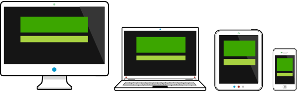
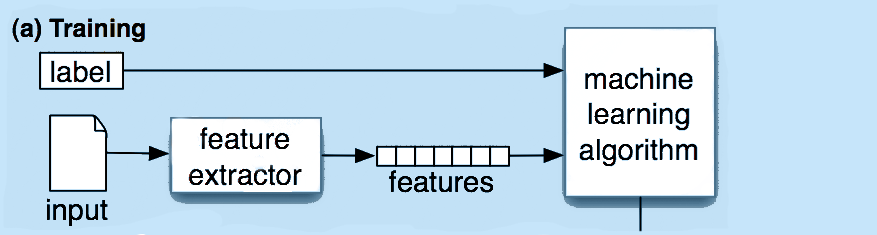

La classification
Rémi Michel
Etudiant Master 2 MIAGE - UJF
Développeur à
Shopping Adventure
Le problème

Comment retrouver un objet?
La classification
Système de classement
Ranger des objets dans différentes catégories
Automatisation ????
Comment?
Méthode déterministe
Méthode probabilistique
Approche probabilistique

Arbres de décision
PRINCIPE ?
Diagramme
1 noeud = 1 décision
1 feuille = 1 label
AVANTAGES
Intuitif
Simple
INCOVÉNIENTS
Division du training set
Overfitting
Organisation hiérarchique
UTILISATIONS
Biologie
Naïve-Bayes
PRINCIPE ?
Modèle Probabilisatique
Probabilité conditionnelle
Indépendance des features
AVANTAGES
Facilement programmable
Rapide
INCOVÉNIENTS
Intéractions entre features
UTILISATIONS
Emails
Classification de documents
Machines à vecteur de support (SVM)
PRINCIPE ?
...
...
AVANTAGES
Haute précision
INCOVÉNIENTS
Interprétation difficile
Assez gourmand
UTILISATIONS
Classification de textes
Evaluation du modèle
Précision
Matrices de confusion
Cross-Validation
Quelques outils
Natural Language Toolkit (NLTK)
Scikit Learn
Conclusion